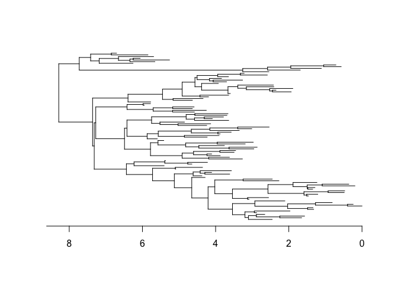
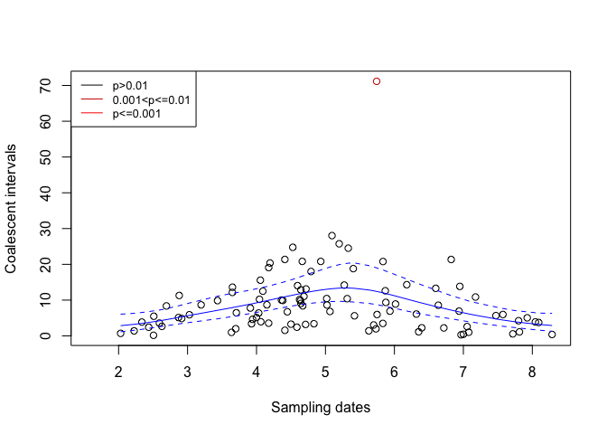

DetectImports is a R package aimed at distinguishing imported cases from locally acquired cases within a geographically limited genomic sample of an infectious disease. The input is a dated phylogeny of local genomes only, as can be build using BEAST, treedater or BactDating. The main output is an estimated probability of importation for each case in the dated phylogeny.
A scientific paper describing DetectImports in detail has been published:
Xavier Didelot, David Helekal, Michelle Kendall, Paolo Ribeca (2023). Distinguishing imported cases from locally acquired cases within a geographically limited genomic sample of an infectious disease. Bioinformatics 39:btac761, https://doi.org/10.1093/bioinformatics/btac761
DetectImports depends on Stan through CmdStan. Although other options might exist, for instance using Conda, the simplest option is to install CmdStan via the R package CmdStanR. You can do so with the commands
install.packages("cmdstanr", repos = c("https://mc-stan.org/r-packages/", getOption("repos")))
library(cmdstanr)
install_cmdstan()The last command will download and compile all the missing dependencies.
You can install DetectImports directly from github with the commands:
devtools::install_github("xavierdidelot/DetectImports")The package can then be loaded using:
First we load and plot a dated tree stored in a Newick file. For this example we will use the file example.nwk which is distributed within the package DetectImports:
library(ape)
path=system.file("extdata", "example.nwk", package = "DetectImports")
tree=read.tree(path)
plot(tree,show.tip.label=F)
axisPhylo(1)
We are now ready to detect the imports in this tree:
library(DetectImports)
set.seed(0) #For reproducibility
res=detectImports(tree)
plot(res)
The bottom part is a scatter plot of the coalescent intervals for each sequence as a function of time, with the sequences corresponding to imports coloured according their probability. The top part shows the original tree with sequences coloured in red and sequences that have been propagating locally but descend from originally imported sequences coloured in blue.
For more advanced examples of use, see the vignettes.